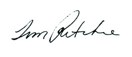

Letter from the President
In 2014, the question that energized The Tech was this: How can we be most useful to our community? To expand this question, we asked: How can we develop our spaces and programs in ways that are genuinely useful to teachers, families, and Silicon Valley’s innovation ecosystem? Our answer was to create new physical spaces, exhibits, and programs that our community members now use to take on the challenges — and take up the opportunities — most relevant to them.
The transformation of The Tech’s lower level is the most visible manifestation of this commitment. Our multipurpose, newly expanded Tech Studio is often used for startup weekends, hack-a-thons, product demonstrations, ed-tech seminars, and the like. It is also used by our education team for engineering challenges, workshops, and labs. Those uses will accelerate as word gets out that The Tech has the spaces and tools Silicon Valley needs to add momentum to its innovation ecosystem.
Last year we also took steps to be more relevant to educators. The Tech Challenge program has increasingly become a resource for teachers as they adapt their lessons to Common Core and Next Generation Science Standards. We launched The Tech Academies of Innovation program to help educators better understand how to use engineering challenges to engage students more deeply in science, math, and technology. And we continued our free labs program for schools that serve low-income students.
In the year ahead, I hope you will visit The Tech and experience how we are becoming increasingly relevant to things that matter to you. See our new exhibits — Body Metrics, sponsored by Kaiser Permanente, where you can explore the digital you; and Cyber Detectives, sponsored by Palo Alto Networks, opening this summer, where you can learn how to protect yourself in a digital age. Watch for our new evening program, Creative Collisions, which is designed to spawn new innovations and new thinking. Come to The Tech Awards gala and see how we are encouraging innovators worldwide to use technology to address humanity’s most difficult problems.
We enter the new year with Marge Piercy’s poem “To Be of Use” in mind. She reminds us that:
Hopi vases that held corn, are put in museums
but you know they were made to be used.
The pitcher cries for water to carry
and a person for work that is real.

So, too, The Tech is made to be used. Our very real work is to ensure that when teachers, parents, and the community call for help, The Tech answers with resources that are relevant, creative and, well, useful.
Tim Ritchie, President and CEO
